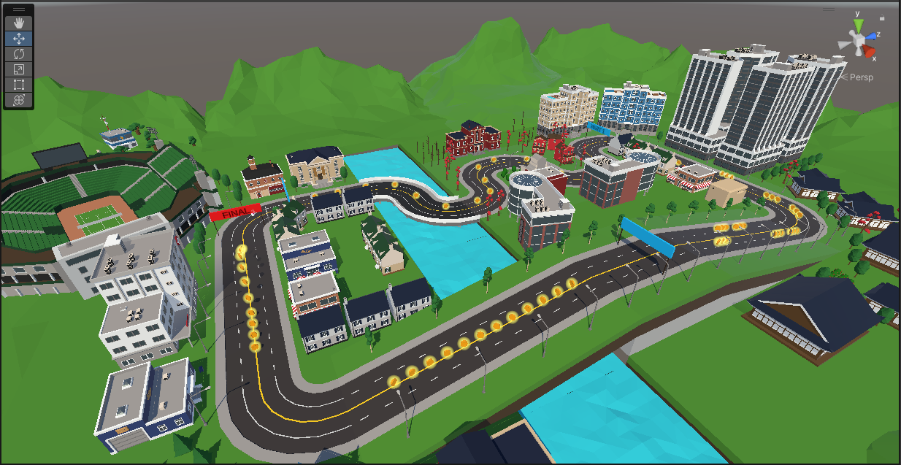
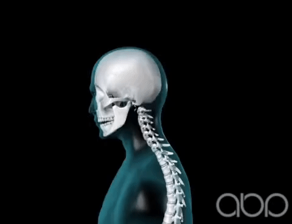
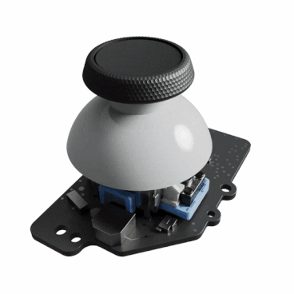

This entire blog is about ‘Interaction in Virtual and augmented Reality’, a course at TU-Darmstadt in the winter semester 2022/2023, in which I participated. More details can be (hopefully, in case TUCAN, the universities’ system, didn’t die) found here. The course was held by Jan Gugenheimer1, the overall class structure was inspired by the MIT-Course “How to make (almost) Anything”2, a course in which people… make… stuff… and then write about it. Look, best go check it out yourself, it’s quite interesting.
Goal of this Project
The general premise of the module was simple: “Come up with an interesting movement and interaction technique in virtual reality, implement it, do some very basic non-scientific-at-all study, and write a blog about it”. Oh, hey, that’s what you’re reading right now! For this purpose, we were given a skeleton-unity project consisting of a simple Parkour with some coins to pick up, and some simple interaction tasks.
|

|
|---|
| Parkour: The given basic level we needed to plop our character with its’ associated movement and interaction techniques into. It has some curves to test maneuverability, and a straight at the second flagpole to achieve some higher speed values. |
My Premise
Most participants chose a fun, unique and interesting way to move through the parkour. One participant took a kite-surfing approach, another chose some form of movement through a DJ-Set (???), two participants independently chose a form of paddling as their movement technique, and one participant used gesture recognition to command a rat (????!?!?!??). So, in short, we were pretty much presented with the opportunity to implement anything in VR, as long as it somehow enabled movement and interaction in a three-dimensional environment.
I chose a much more boring approach: All the above solutions relied on either controllers or hand gestures. But what if you don’t have controllers? Or hands? Well, first of all, my condolences. Second, this is where my idea comes in: Movement and Interaction without using controllers or your hands. Well, mostly without, I’ll come to that later. My idea to achieve this was to use the angles of the headset itself to move a character through a world, and translate/rotate objects in a three-dimensional space. My initial pitch looked something like this:
|


|
|---|
| Idea: What if I just use a persons’ neck as a thumbstick? |
How is this useful?
One apparent use for such a technology would be to aid and enable people with bodily impairments - say people paralyzed from the neck downward - to participate in applications such as VRChat or the Metaverse3. It might also be useful if the available space to enjoy VR in is limited, due to the - you know - entire “flailing-your-arms-around-to-do-stuff-in-vr”4-thing.
Full Disclosure
As you may have noticed, this isn’t the most… serious blog or project documentation, and it may or may not be entirely fitting for a graded, equal-to-an-exam-level project. This is a conscious decision made by me, as I mainly took this course because of my interest in VR applications. Due to these circumstances, I mainly took this class to have fun and experiment with VR, as this is basically the only way for me to do so short of having to spend… *checks prices* …400-1500€. This blog reflects this in how it is written and presented. In the end, I honestly care less about getting the best grade possible, and more about the experience and… fun? Spoiler: there were more (locomotion) and less fun (interaction) parts to this project, and you will learn about my highs and woes in the coming chapters.
What’s next?
The next chapter will deal mainly with the woes and pains of setting up unity for development on the Quest, as well as getting the Quest itself ready for development.
-
Full disclosure: I don’t believe the Metaverse in its’ current form will ever take of or be as relevant as the internet. I also think it’s funny that (then) Facebook chose the name “Metaverse” as coined by Neal Stephenson in his 1992 Novel “Snow Crash”. This entire situation reminds me of the following tweet: https://twitter.com/AlexBlechman/status/1457842724128833538 ↩︎
-
This is the official term for when you move your arms around erratically in VR, and I will not be swayed on this. ↩︎